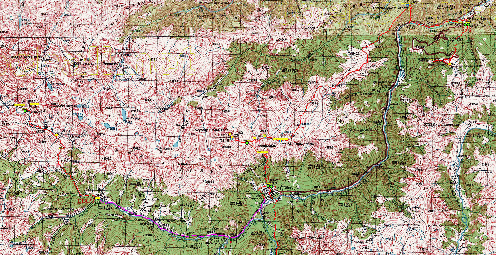

ЦЕНТРАЛЬНАЯ СЕКЦИЯ ТУРИЗМА МАИ

.
ОТЧЕТ О ГОРНОМ ПОХОДЕ 1-й к.с. ПО ЗАПАДНОМУ КАВКАЗУ,
СОВЕРШЕННОМ с 06.10 по 11.10.2019
МАРШРУТ:
КПП в устье р. Дукка - рад. цирк пер. Ацгара - пос. Архыз - рад. долина р. Кызгыч - пер. Баритовый + в. Джумарыклы-Тебе Ю. (3145, 1А) - траверс хр. Абишира-Ахуба от пер. Баритовый до пер. Мал. Кяфарский (2937, 1А) - траверс хр. Абишира-Ахуба до пер. Генеровская балка - р. Б.Зеленчук - пос. Буково - рад. астрономическая площадка САО РАН.
Маршрутная книжка: 1/3-119
Руководитель группы — Лебедев Александр Андреевич.
Отчет в формате pdf загружен ЗДЕСЬ, альбом фотографий ЗДЕСЬ.
.
1 |
||
. |
1.1 |
|
. |
1.2 |
|
. |
1.3 |
|
. |
1.4 |
|
. |
1.5 |
|
|
1.6 |
Погода в начале октября 2019 и её решающее влияние на поход. |
|
1.7 |
|
|
1.8 |
|
2 |
||
|
2.1 |
|
|
2.2 |
|
|
2.3 |
|
|
2.4 |
Перевал Баритовый и восхождение на южную вершину Джумарыклы-Тебе (3145, 1А). |
|
2.5 |
Траверс хр. Абишира-Ахуба от пер. Баритовый до пер. Малый Кяфарский (2937, 1А). |
|
2.6 |
Траверс хр. Абишира-Ахуба от пер. Малый Кяфарский до пер. Генеровская балка. |
|
2.7 |
|
|
2.8 |
|
3 |
||
Район путешествия |
Западный Кавказ (хребет Абишира-Ахуба) |
Вид туризма |
Горный |
Спортивная организация |
Центральная секция туризма МАИ |
Категория сложности |
Первая |
Количество участников |
9 |
Руководитель |
Лебедев Александр Андреевич |
Выпускающая МКК |
МКК ФСТ-ОТМ |
Маршрутная книжка |
1/3 - 119 |
Сроки активной части похода |
06.10 - 11.10.2019 |
Продолжительность активной части похода |
6 дней |
Длина маршрута |
70 км |
Суммарный набор высоты |
4037 м |
Максимальная высота |
3145 м |
N |
Ф.И.О. |
Дата рожд. |
Место работы, учебы |
01 |
Лебедев Александр Андреевич |
15.11.1984 |
ЛМП, инженер |
02 |
Авраменко Валерий Вячеславович |
17.09.1999 |
МАИ, студент Т2О-202С |
03 |
Бубнова Дарья Вячеславовна |
21.03.2002 |
МАИ, студент 3О-104Б |
04 |
Виноградова Анастасия Евгеньевна |
12.04.2000 |
МАИ, студент 3О-210Б |
05 |
Герасимов Кирилл Игоревич |
09.11.2001 |
МАИ, студент 1О-108Б |
06 |
Дятлов Сергей Владиславович |
25.04.2002 |
МАИ, студент 1О-101Б |
07 |
Еналеев Константин Русланович |
07.09.1994 |
ЦУП ЦНИИМАШ, инженер |
08 |
Малышев Борис Александрович |
11.10.2001 |
МАИ, студент 3О-104Б |
09 |
Ткачева Анастасия Олеговна |
12.06.1996 |
ООО «Тибурон», программист |
1.3. Kmz-файл с маршрутом для просмотра программой Google Earth загружен ЗДЕСЬ.
1.4. Карта с нанесенным на неё маршрутом.

.
{kind=link}
1.5. Календарный график движения
Примечание: В столбце "H" прописана положительная вариация высоты за день (сумма всех наборов). В столбце "Lз " прописан пройденный (согласно карте) путь в зачет. В столбце "L " прописан фактически пройденный путь. В столбце "L эфф." прописан эффективный путь L эфф. = L + 10 * H (для оценки трудоемкости).
День |
N |
Наименование участка пути |
Перепады высоты |
Высота ночёвки |
Н [m] |
Lz [km] |
Lf [km] |
L эфф. |
04.10 |
- |
Отправление поезда № 034 в 21.50 |
- |
- |
- |
- |
- |
- |
05.10 |
- |
В поезде |
- |
- |
- |
- |
- |
- |
06.10 |
1 |
Прибытие поезда в Армавир в 01.19, переезд на арендном автотранспорте к КПП в устье Дукки + переход в вост. цирк пер. Ацгара |
1775-2440-2300-2625 |
2625 |
990 |
10.9 |
10.9 |
20.8 |
07.10 |
2 |
п.т. - КПП в устье Дукки + переезд в пос. Архыз |
2625-2300-2440-1775-1470-1505 |
1505 |
35 |
1.65 |
12.55 |
12.9 |
08.10 |
3 |
Рад. Долина р. Кызгыч |
1505-1445-1515-1475-1505-1475-1515-1445-1505 |
1505 |
200 |
8.36 |
16.72 |
18.72 |
09.10 |
4 |
п.т. - пер. Баритовый + рад. в. Джумарыклы-Тебе Юж. (3145, 1А) |
1505-2800-3145-2800 |
2800 |
1640 |
6.73 |
8.07 |
24.47 |
10.10 |
5 |
п.т. - траверс хр. Абишира-Ахуба до пер. Малый Кяфарский (2937, 1А) – траверс хр. Абишира-Ахуба до пер. Генеровская балка (н.к.) – р. Б.Зеленчук – пос. Буково |
2800-2865-2805-2937-2750-2810-2290-2345-1555-1180-1245 |
1245 |
377 |
24.93 |
24.93 |
28.7 |
11.10 |
6 |
рад. астрономическая площадка САО РАН |
1245-2070-1245 |
1245 |
825 |
5.41 |
10.82 |
19.07 |
12.10 |
- |
Переезд в Армавир, отправление с поездом № 121С в 13.49 |
- |
- |
0 |
0 |
0 |
0 |
13.10 |
- |
Прибытие поезда в Москву в 20.44 |
- |
- |
0 |
0 |
0 |
0 |
|
|
ВСЕГО: |
|
|
4067 |
57.93 |
83.97 |
124.64 |
Итого активными способами передвижения: 57.93 * 1.2 = 70 км.
Фактически пройдено 83.97 * 1.2 = 101 км
Замечание. Участники Малышев Б.А. и Бубнова Д.В. не участвовали в радиальном выходе 08.10.2019, длина их маршрута 60 км. Участники Авраменко В.В. и Герасимов К.И. не участвовали в радиальном выходе на южную вершину Джумарыклы-Тебе 09.10.2019, длина их маршрута 68 км.
1.6. Погода в начале октября 2019 и её решающее влияние на поход. Что удивительно, погода на Кавказе с 06 по 11 октября 2019 г. была значительно менее благоприятной для прохождения маршрута, чем в начале ноября 2018 г. [1].
Главной заботой в походе было уклонение от циклонов, или вписывание своих действий в те рамки, которые ими были продиктованы. Прогнозы погоды изучались каждый день и по несколько раз в день.
Рано утром 06.10.2019, как только слезли с машины около КПП в устье Дукки, начался дождь. Одели накидки и пошли под дождем. К полудню дождь закончился, выглянуло солнце, к концу дня мы разбили лагерь около озера в цирке перевалов Ацгара и Чилик на высоте 2625 м. Ночью была метель. Утром 07.10.2019 встали, вокруг зима, всё в снегу, температура -10, ветер. Пока собирали лагерь, у многих начали коченеть пальцы ног. Было очевидно, что дальнейшее пребывание на высоте в такую погоду не для новичков. Поэтому мы отказались от прохождения перевала Чилик и спустились опять к КПП в устье Дукки. Здесь поймали попутку и доехали до Архыза. Таким образом, первые два дня похода ушли на радиальный выход с «экстремальной» ночевкой.
По прогнозу в ночь с 08.10 на 09.10 район Архыза должен быть накрыт следующим циклоном с выпадением осадков до 26 мм !!! Это 26 сантиметров снега на высоте. Подниматься наверх при таком прогнозе было безумием. Решили никуда не идти и посмотреть, что же будет. Просто сделали 10-километровый радиальный выход в долину р. Кызгыч полюбоваться красотами Кавказского биосферного заповедника (зубров увидеть не удалось).
Вечером 08.10 началось! Сильный дождь, если не ливень, шел всю ночь, не переставая. Рано утром вылезли из палаток осмотреть горы. Снег почти не выпал, дождь был тёплый, циклон пришел с юга.
По прогнозу три дня с 09.10 по 11.10 хорошая погода. За эти три дня мы постарались наверстать упущенное, насколько это было возможно. За два дня мы траверсировали хребет Абишира-Ахуба от перевала Архыз до перевала Генеровская балка и спустились в пос. Буково, пройдя 33 км (по карте) и набрав по высоте около 2000 м. В последний день мы совершили радиальный выход к телескопу, посетив астрономическую площадку САО РАН.
1.7. Соответствие заявленного и пройденного маршрута. После экстемальной ночевки в пургу в ночь с 06 по 07 октября мы воспользовались заявленным аварийным выходом с маршрута N1 «Из долины р. Речипста вниз по пути подъёма к началу маршрута».
В Архызе встали на маршрут, в результате был реализован пункт 6 в запасных вариантах: «Разрешается обход локального препятствия или серии из локальных препятствий по долинам, при наличии в них троп или дорог».
Радиальный выход на вершину Джумарыклы-Тебе был заявлен в запасных вариантах N1-N3. Радиальный выход к обсерватории, который мы осуществили в последний день похода, выходил за рамки запасных вариантов. Однако группа поднималась по тропе, хорошо известной руководителю похода, который, будучи студентом, учился в ГАИШ и проходил практику в обсерватории. К тому же весь путь лежал в зоне устойчивой сотовой связи.
1.8. Безопасность. Группа встала на учет в Карачаево-Черкесском ПСО, была оснащена GPS-приемником с загруженными треками основного и запасных вариантов маршрута, в комплект личного снаряжения каждого участника входил ледоруб.
1. Коробовцев А.С. Отчет о горном походе 1 к.с. по хребту Абишира-Ахуба в ноябре 2018 г.